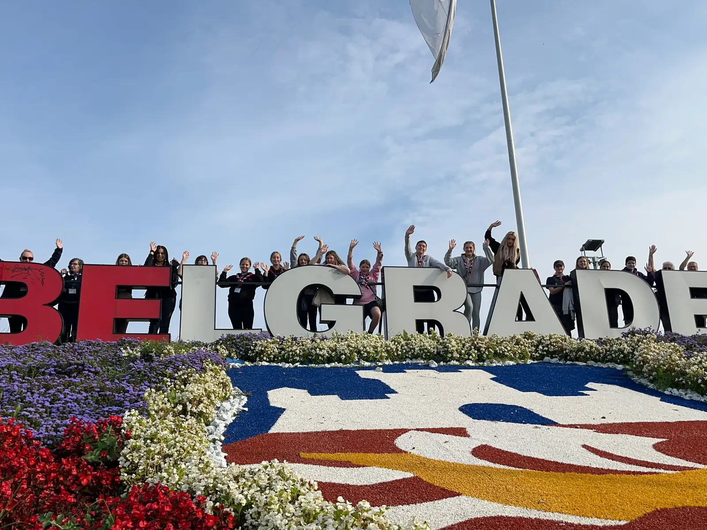
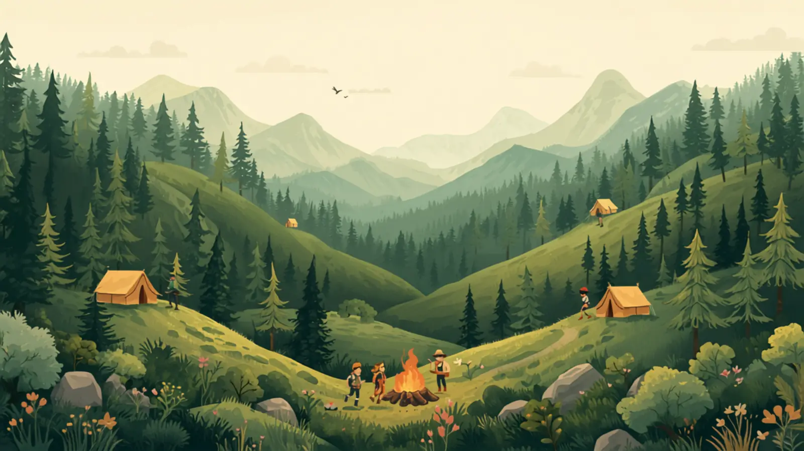
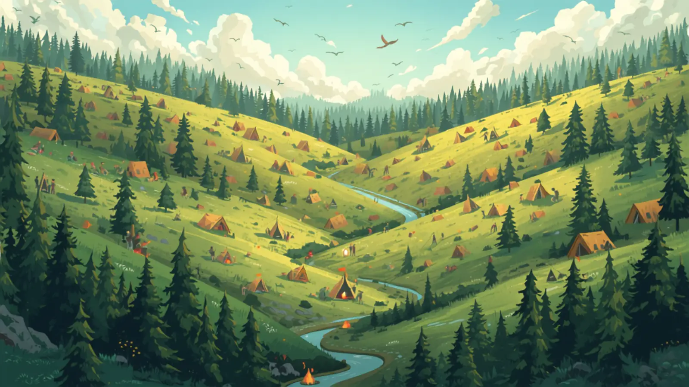
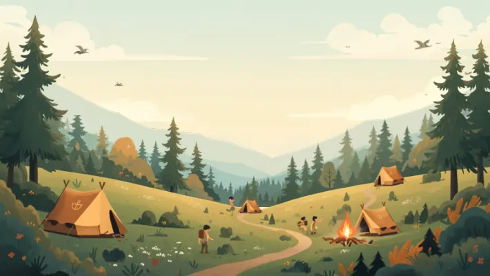

Izviđači Beograd · Odred Mihajlovac · od 1967.
Šuma uči brže
od bilo koje
učionice.
Skoro šest decenija vodimo decu na prve uspone, prva noćenja pod šatorom i prve odluke koje donose sami. Dođi na sastanak u nedelju, bez obaveze i bez opreme.
Jednom izviđač, uvek izviđač!
Nismo škola. Odred izviđača „Mihajlovac“ je zajednica u kojoj deca uče kroz ono što rade sama: postavljaju šator, kuvaju na vatri, čitaju mapu, uče mlađe od sebe. Starešine su obučeni volonteri, koji su dugi niz godina članovi odreda.
Više o nama →
Od prve vatre do vodnika.
Svaka grupa ima svoj program, svoje veštine i svoj tempo. Prelazak u sledeću grupu je događaj za sebe.
Poletarci i pčelice
Igra u prirodi, prvi čvorovi, prva noć pod šatorom uz vodiče u blizini.
Mlađi izviđači i planinke
Rad u vodovima, orijentacija, kuvanje na vatri, samostalno logorovanje.
izviđači i planinke
Duži usponi, planiranje sopstvenih izleta, prve uloge vodiča mlađima.
Mlađi brđani i brđanke
Vođenje mlađih, obuke, ekspedicije i organizacija letnjeg logorovanja.
odrasli u izviđaštvu
Prevoz, kuhinja, logistika na logorovanju. Nije potrebno prethodno iskustvo.
Šta dete zna posle godine u odredu.
Ne držimo predavanja. Veštine se stiču na terenu i ostaju za ceo život.

Deset dana koje deca pamte godinama.
Šatori, kuhinja u prirodi, dnevne i večernje aktivnosti i nezaobilazna logorska vatra.
Pravo izviđačko iskustvo!
Kamp „Oseti avanturu“ 2027
u pripremiuskoro
uskoro
uskoro
uskoro
Aktivnosti koje nose našu godinu.
Pored nedeljnih sastanaka, ovo su akcije koje odred organizuje kroz celu godinu.
Sajam kolekcionara
Naš odred već dugo godina "Sajam kolekcionara", gde izviđači predstavljaju kolekcije, razmenjuju značke, marke i drugi kolekcionarski materijal i upoznaju kolekcionare iz cele zemlje.
Volontiraj i ti, festival
Festival "Volontiraj i ti" koji odred tek pokreće, planiran za jun. Ideja su radionice izviđačkih veština, igre za decu i poziv mladima da volontiraju sa nama.
Međunarodne aktivnosti
Naši članovi učestvuju na međunarodnim kampovima i susretima izviđača u inostranstvu: nova poznanstva, rad na engleskom jeziku i iskustvo izviđaštva izvan Srbije.

Uprava i štab odreda
Ono što roditelji pitaju prvo.
Nema odgovora na tvoje pitanje? Pozovi ili piši, javljamo se istog dana.
Da li je potrebna oprema za prvi sastanak?
Nije. Dovoljna je udobna obuća. Za izlete i kampovanja dobijate spisak, a deo opreme odred pozajmljuje.
Koliko košta članstvo?
Godišnja članarina pokriva osiguranje i članstvo u Savezu. Članarina je 1000 dinara mesečno, uz popust posle odredjenog vremena u odredu. Kampovanja se plaćaju posebno, uz mogućnost popusta za drugo dete.
Koliko odraslih ide na izlete?
Najmanje dva obučena vodiča po grupi, sa spiskom učesnika, kontaktima roditelja i priborom za prvu pomoć.
Šta ako dete nikad nije spavalo van kuće?
Počinjemo kratkim izletima i jednim noćenjem blizu grada. Do leta gotovo sva deca su spremna za kampovanje.
Može li dete da proba pre upisa?
Može doći na dva sastanka i jedan izlet bez upisa. Ako se ne uklopi, nema nikakvih obaveza.
Mogu li roditelji da se uključe?
Rado. Potrebni su nam prevoz, kuhinja na kampovanju i pomoć u logistici, bez prethodnog iskustva.
Dođite u nedelju. Ostalo ide samo.
Kako do nas?
Prijava
Ostavite podatke pa vas zovemo, ili nam se javite direktno.